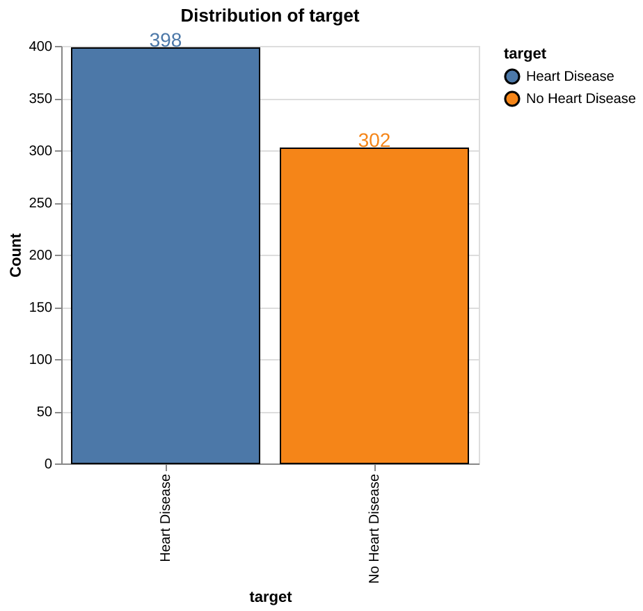
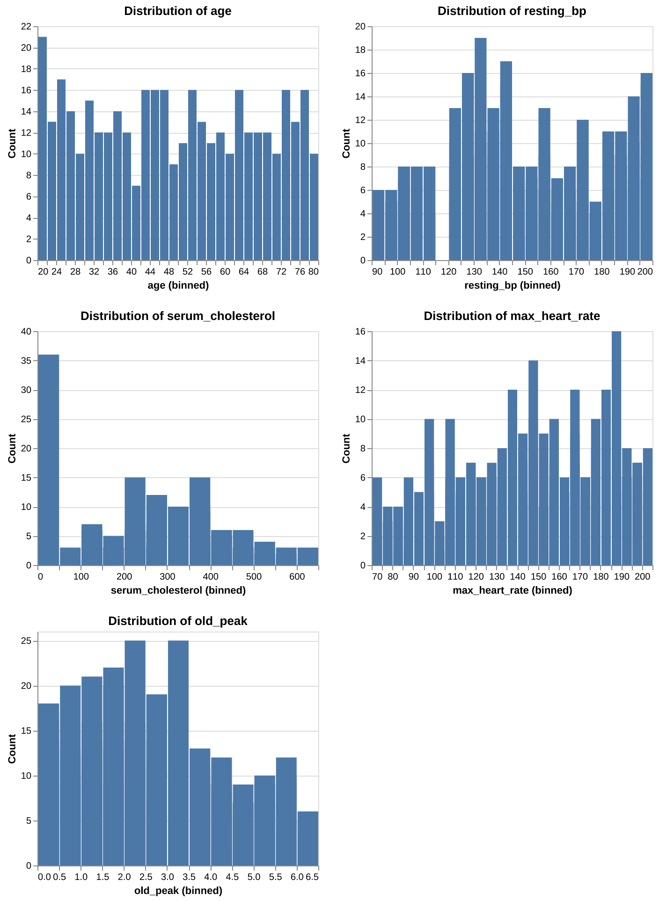
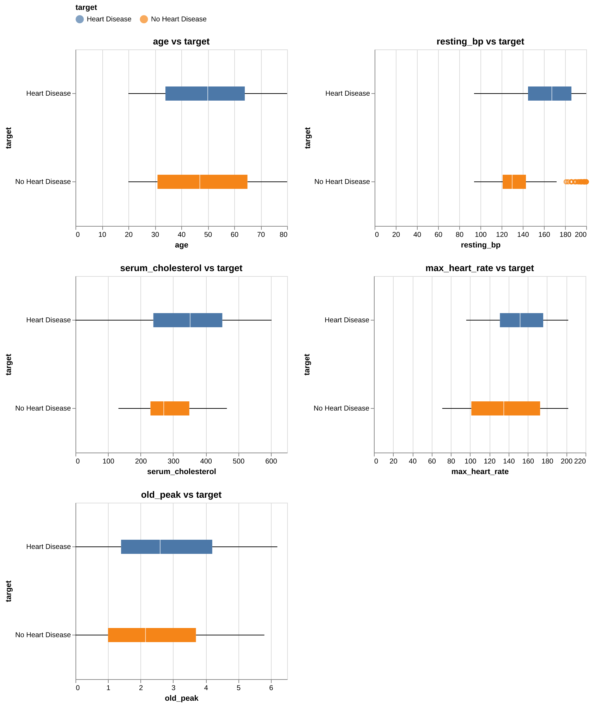
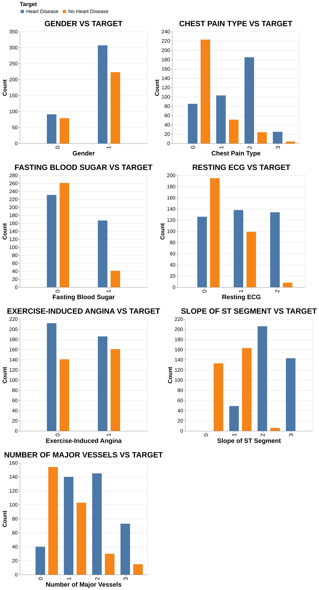
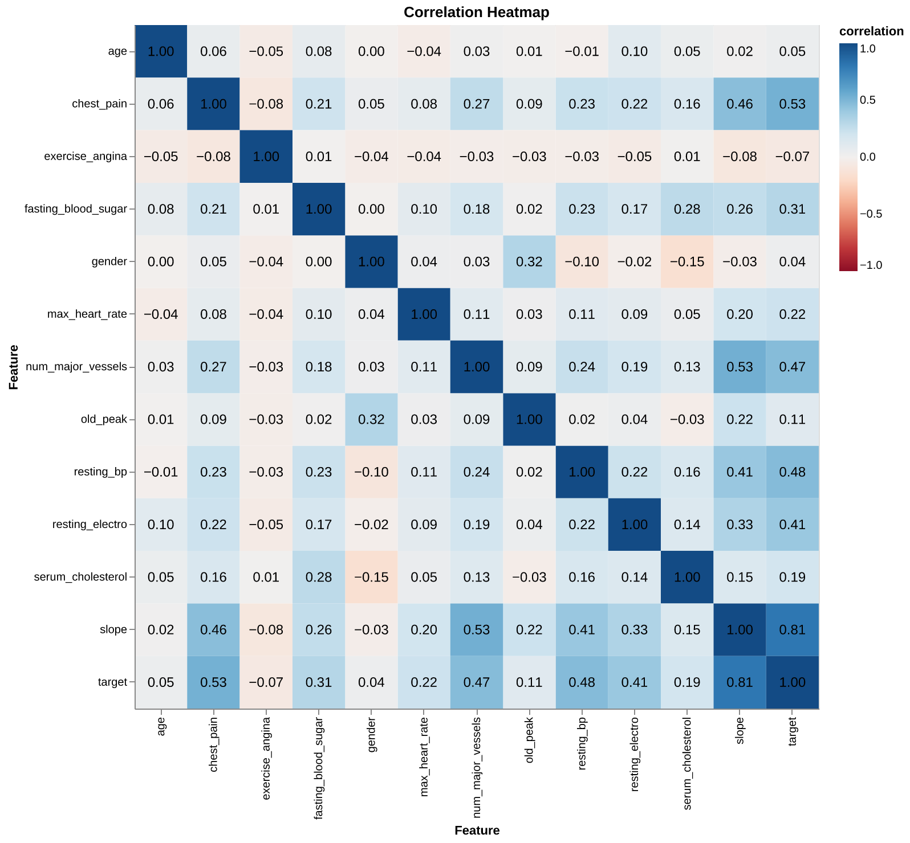
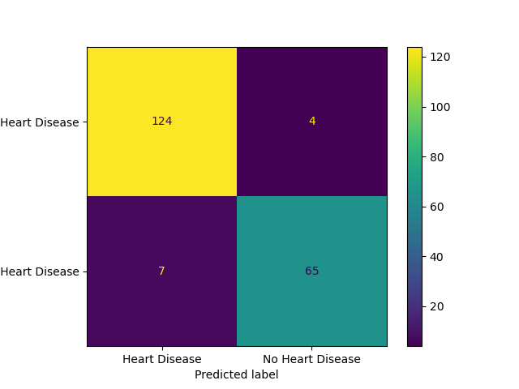

| patientid | age | gender | chestpain | restingBP | serumcholestrol | fastingbloodsugar | restingrelectro | maxheartrate | exerciseangia | oldpeak | slope | noofmajorvessels | target | |
|---|---|---|---|---|---|---|---|---|---|---|---|---|---|---|
| 0 | 103368 | 53 | 1 | 2 | 171 | 0 | 0 | 1 | 147 | 0 | 5.3 | 3 | 3 | 1 |
| 1 | 119250 | 40 | 1 | 0 | 94 | 229 | 0 | 1 | 115 | 0 | 3.7 | 1 | 1 | 0 |
| 2 | 119372 | 49 | 1 | 2 | 133 | 142 | 0 | 0 | 202 | 1 | 5.0 | 1 | 0 | 0 |
| 3 | 132514 | 43 | 1 | 0 | 138 | 295 | 1 | 1 | 153 | 0 | 3.2 | 2 | 2 | 1 |
| 4 | 146211 | 31 | 1 | 1 | 199 | 0 | 0 | 2 | 136 | 0 | 5.3 | 3 | 2 | 1 |
Heart Disease Risk Prediction and Early-Stage Heart Disease Detection
1 Summary
We wish to create a simple machine learning classification model which can help us predict high risk individuals for heart disease. We try three methods: Decision Tree Classifier, Logistic Regression and Support Vector Machine with Radial Basis Function (RBF) Kernel to use 14 common features related to heart disease to make the predictions. Here we aimed to find the best model that predicts whether an individual is at risk of developing heart disease based on their clinical features, enabling early identification and prevention measures.
We have selected F2 score as our primary performance metric since our primary goal is to minimize False Negatives - cases where patients at risk of heart disease are incorrectly identified as healthy. The final classifier SVM RBF performed reasonably well on the unseen test dataset, achieving an F2 score (β = 2) of np.float64(0.9824). Out of the np.int64(300) test data cases, it correctly predicted np.int64(293) and misclassified np.int64(7), out of which there are np.int64(4) False Negatives - predicting that a patient is at risk of developing heart disease when they are in fact healthy and np.int64(3) False Positives. Although False Positives could cause the patient to undergo unnecessary treatment if the model is used as a decision tool, we expect there to be additional decision layers which can mitigate this. As such, we believe this model serves as a valuable decision-support tool, assisting medical professionals in identifying high-risk individuals for closer monitoring and timely intervention.
2 Introduction
According to the American Heart Association (2025), Heart disease, or Coronary Artery Disease is a condition in which narrowed coronary arteries reduce blood flow to the heart. This can lead to heart attack - where the heart can stop working, and in many cases leaves a very narrow window of time for responsive action. Data from the World Health Organization (2025) shows that, in India, a country of approximately 1.4 billion people, heart disease has consistently been the leading cause of death over the past decade (2010–2020) for both genders.
Cardiovascular diseases or CVDs account for about 31% of all deaths, according to the latest Sample Registration System report (Business Standard 2025). India’s age-standardized CVD death rate is estimated at 272 per 100,000, significantly higher than the global average of approximately 235 per 100,000 (Prabhakaran, Jeemon, and Roy 2016).
If high-risk individuals can be identified before clinical events such as heart attacks, early interventions like the few recommended by the National Heart, Lung, and Blood Institute (n.d.) can reduce mortality rate. The list includes simple lifestyle changes, to medicines like statins which can reduce plaque buildup, to medical procedures in necessary cases.
Since traditional diagnosis often depends on physician expertise, subjective assessment, and resource-intensive tests, a data-driven predictive model could therefore help identify patients who are more prone to such events, especially in resource-limited settings (Gupta et al. 2018).
Thus, even minor improvements or supplementary methods in early detection could make a meaningful difference in population health. In this project, we attempt to use measurable, structured features to identify high-risk cases, enabling more careful monitoring and earlier preventive measures.
3 Methods
3.1 Data
The dataset contains 1000 unique examples and 14 features containing information on the individuals cholesterol, blood pressure and fasting blood sugar. We are using 13 features and dropping the patient ID feature for our analysis. The target variable indicates whether a patient has ‘Heart Disease’ by 1 or ‘No Heart Disease’ by 0. The dataset has no missing values as they have been imputed in the source set.
This dataset has been obtained from Doppala and Bhattacharyya (2021). It was collected at a multispecialty hospital in India. The original source provides detailed descriptions for all variables, along with summary statistics for the numerical features. The details can be found here.
3.2 Analysis
The analysis was performed using the Python programming language (Van Rossum and Drake 2009) and the following packages: pandas (team 2020), altair (VanderPlas et al. 2018), and scikit-learn (Pedregosa et al. 2011). The dataset was split into training (70%) and testing (30%) subsets using a fixed random state (123) to ensure reproducibility. EDA was performed exclusively on the training data to prevent information leakage.
3.2.1 Data Preparation
To ensure data integrity, the dataset was successfully read and validated against a predefined pandera (Bantilan 2020) schema, confirming that the file format, column names, and data types were consistent with analysis requirements. The validation process verified the absence of duplicate records or empty observations. Specific columns like slope and serum cholesterol triggered warnings for zero-values and potential outliers. Since these values are biologically implausible, they were interpreted as missing data that had been imputed with zeros. TAdditionally, extreme serum cholesterol values were flagged as outliers; however, we retained these as they represent high-risk clinical cases rather than data errors. The numerical features were scaled to effectively capture the outliers rather than removing them to preserve data volume and capture extreme cases. Finally, we renamed the target labels to “Heart Disease” and “No Heart Disease” from binary encoding of 1 and 0 and inspected feature distributions and correlations. The results confirmed that no anomalous relationships exist that would impact modeling.
3.2.2 Exploratory Data Analysis
This section provides a detailed exploration of the dataset, focusing on the distribution of features, relationships with the target variable and insights that support later preprocessing and modeling.
Target Distribution: The dataset is relatively balanced (Figure 1), with 398 cases of heart disease and 302 cases without. This slight imbalance is not substantial enough to negatively impact modeling.

Feature Distributions: As seen in Figure 2, none of the continuous features follow a perfect normal distribution. Notably, serum cholesterol and oldpeak are right-skewed, while maximum heart rate is left-skewed.

Numerical Features: Patients with heart disease usually are older and generally exhibit higher resting blood pressure, serum cholesterol, and ‘oldpeak’ values compared to healthy individuals. On the other hand, they achieve notably lower maximum heart rates, suggesting reduced cardiac capacity under stress.

Categorical Features: Higher heart disease prevalence is observed (Figure 4) in males and patients with exercise-induced angina, ST-T wave abnormalities, or a higher count of major vessels. Additionally, atypical and non-anginal chest pain types showed a stronger association with heart disease than typical angina in this dataset.

Correlations: The correlation heatmap (Figure 5) reveals that slope, type of chest pain, and resting blood pressure have the strongest positive relationships with the target. On the other hand, age and gender showed surprisingly low linear correlation with the target in this specific dataset.

3.3 Scoring Metric
We selected F2 score as our primary metric. In medical diagnostics, minimizing False Negatives is critical as failing to identify a patient at risk of developing heart disease carries more significance than incorrectly identifying a healthly patient as at risk - False Positive. The F-beta score weighs recall higher than precision, ensuring the model prioritizes capturing as many positive cases as possible.
\[ F_{\beta} = (1+\beta^2) . \frac{precision \times recall}{\beta^2 precision + recall} \]
Setting \(\beta = 2\) prioritizes recall twice as much as precision.
3.4 Model Tuning
We evaluated three candidate models: Logistic Regression, Support Vector Machine (SVM) with RBF kernel, and Decision Tree Classifier along with Dummy Classifier as the baseline. Initial performance was assessed using 5-fold cross-validation with default hyperparameters and random state 123 for an initial assesment of the models on the training set. The mean and standard deviation of these validation scores are summarized in Table 1.
| Unnamed: 0 | fit_time | score_time | test_score | train_score | |
|---|---|---|---|---|---|
| 0 | dummy clf | 0.076 (+/- 0.040) | 0.072 (+/- 0.039) | 0.868 (+/- 0.002) | 0.868 (+/- 0.000) |
| 1 | decision tree | 0.032 (+/- 0.008) | 0.024 (+/- 0.006) | 0.960 (+/- 0.024) | 1.000 (+/- 0.000) |
| 2 | Logistic Regression | 0.130 (+/- 0.058) | 0.030 (+/- 0.015) | 0.957 (+/- 0.021) | 0.973 (+/- 0.004) |
| 3 | RBF SVM | 0.032 (+/- 0.009) | 0.020 (+/- 0.014) | 0.970 (+/- 0.016) | 0.983 (+/- 0.004) |
Following the baseline evaluation, we employed scikit learn’s (Pedregosa et al. 2011) randomized search to optimize the hyperparameters for all three models. This process searched a predefined parameter grid to identify the configuration that maximized the F2 score.

4 Results and Discussion
Model Perforamce
After extensive preprocessing and EDA, we identified our best performing model among the three candidates - Decision Tree Classifier, Logistic Regression and Support Vector Machine (SVM) with Radial Basis Function (RBF) Kernel and Dummy Classifier as the baseline by using cross-validation and randomized search of hyperparameters. SVM RBF stands out as the best perfomer achieving a validation score of np.float64(0.9679) - higher than the other two models. The model achieved F2 score of np.float64(0.9824) and accuracy of np.float64(0.98) when deployed on the test data. It successfully minimized the False Negatives with Recall = np.float64(0.98) and Precision = np.float64(0.98) as seen in the Figure 6.
| Model | F2 Score | |
|---|---|---|
| 0 | Decision Tree | 0.9619 |
| 1 | Logistic Regression | 0.9609 |
| 2 | RBF SVM | 0.9679 |
Assumptions and Limitations
We are assuming the dataset used is representative of the general population. However, given that the data originates from a specific multispecialty hospital in India, there is a risk of sampling bias. The model may not generalize well to populations with different genetic backgrounds or environmental factors.
The primary limitation of this study is the data size. Although the test score aligns closely with the validation score, indicating good generalization within this specific dataset, the relatively small number of observations limits our ability to ensure the model would perform equally well on a diverse population. Another limitation is that the SVM RBF model is not as interpretable as other models such as Decision Trees. In the given context of medical diagnosis, a models explainability may be prefered to trust its decisions by professionals.
5 Conclusion
Given the high stakes of medical diagnosis, our priority was to minimize False Negatives - ensuring that patients at risk of heart disease are not incorrectly classified as healthy. Our model succeeded in this objective, achieving a high Recall on the test set. This means the model successfully flagged most positive cases of heart disease in the unseen data. While there were a small number of False Positives, this is an acceptable trade-off in a screening context, as the cost of a follow-up test is far lower than the cost of a missed diagnosis.
Ultimately, while the model shows promising results, it should be viewed strictly as a clinical decision-support tool. It is well-suited to screen high-risk patients for closer monitoring by physicians. However, the model performs on statistical patterns and lacks the domain expertise of a human expert. It remains susceptible to making incorrect decisions that a physician, evaluating the patient’s holistic clinical history, would be equipped to identify. Future work should focus on validating this model against larger, more diverse demographic datasets to ensure global applicability.
6 References
American Heart Association. 2025. “Ischemic Heart Disease and Silent Ischemia.” https://www.heart.org/en/health-topics/heart-attack/about-heart-attacks/silent-ischemia-and-ischemic-heart-disease.
Bantilan, Niels. 2020. “Pandera: Statistical Data Validation of Pandas Dataframes.” In Proceedings of the 19th Python in Science Conference, edited by Meghann Agarwal, Chris Calloway, Dillon Niederhut, and David Shupe, 116–24. https://doi.org/ 10.25080/Majora-342d178e-010 .
Business Standard. 2025. “Cardiovascular Diseases Cause One-Third of All Deaths in India: Report.” https://www.business-standard.com/amp/health/cardiovascular-diseases-cause-one-third-of-all-deaths-in-india-report-125090500028_1.html.
Doppala, Bhanu Prakash, and Debnath Bhattacharyya. 2021. “Cardiovascular Disease Dataset.” Mendeley Data. https://doi.org/10.17632/dzz48mvjht.1.
Gupta, Rajeev, Raghubir S. Khedar, Kiran Gaur, and Denis Xavier. 2018. “Low Quality Cardiovascular Care Is Important Coronary Risk Factor in India.” Indian Heart Journal 70: S419–30. https://doi.org/https://doi.org/10.1016/j.ihj.2018.05.002.
National Heart, Lung, and Blood Institute. n.d. “Coronary Heart Disease Treatment.” https://www.nhlbi.nih.gov/health/coronary-heart-disease/treatment.
Pedregosa, F., G. Varoquaux, A. Gramfort, V. Michel, B. Thirion, O. Grisel, M. Blondel, et al. 2011. “Scikit-Learn: Machine Learning in Python.” Journal of Machine Learning Research 12: 2825–30.
Prabhakaran, Dorairaj, Panniyammakal Jeemon, and Ambuj Roy. 2016. “Cardiovascular Diseases in India.” Circulation 133 (16): 1605–20. https://doi.org/10.1161/CIRCULATIONAHA.114.008729.
team, The pandas development. 2020. “Pandas-Dev/Pandas: Pandas.” Zenodo. https://doi.org/10.5281/zenodo.3509134.
Van Rossum, Guido, and Fred L. Drake. 2009. Python 3 Reference Manual. Scotts Valley, CA: CreateSpace.
VanderPlas, Jacob, Brian E. Granger, Jeffrey Heer, Dominik Moritz, Kanit Wongsuphasawat, Arvind Satyanarayan, Eitan Lees, Ilia Timofeev, Ben Welsh, and Scott Sievert. 2018. “Altair: Interactive Statistical Visualizations for Python.” Journal of Open Source Software 3 (32): 1057. https://doi.org/10.21105/joss.01057.
World Health Organization. 2025. “Global Health Estimates: Leading Causes of Death.” https://www.who.int/data/gho/data/themes/mortality-and-global-health-estimates/ghe-leading-causes-of-death.